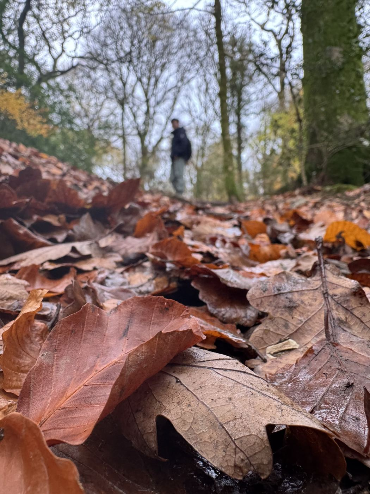
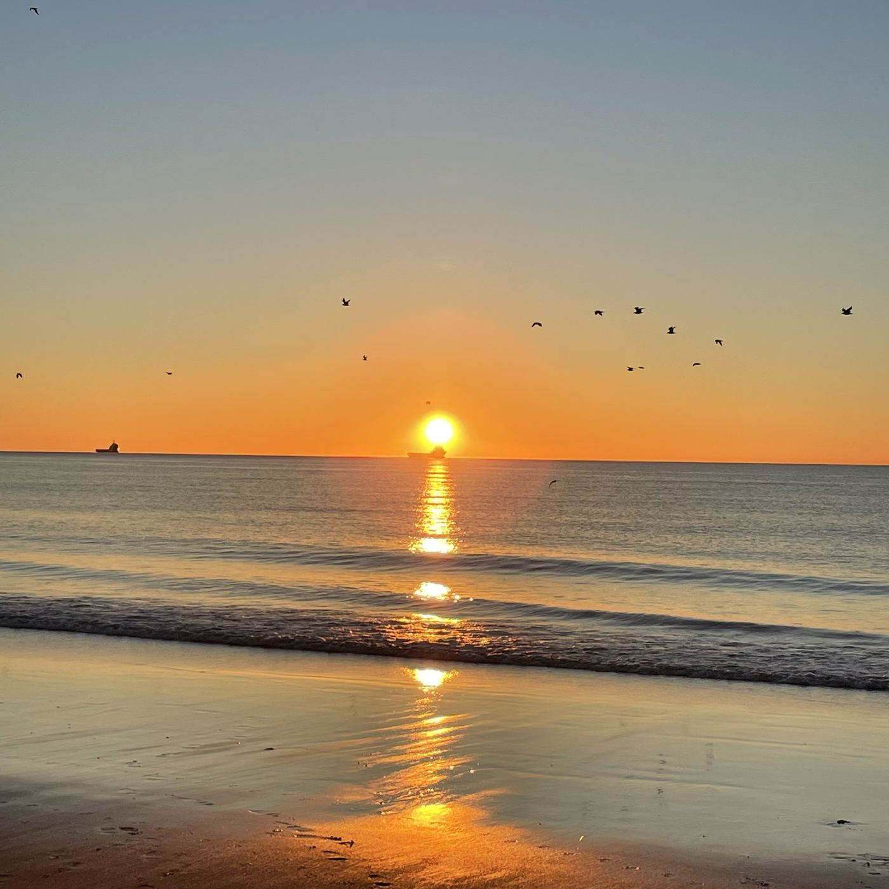
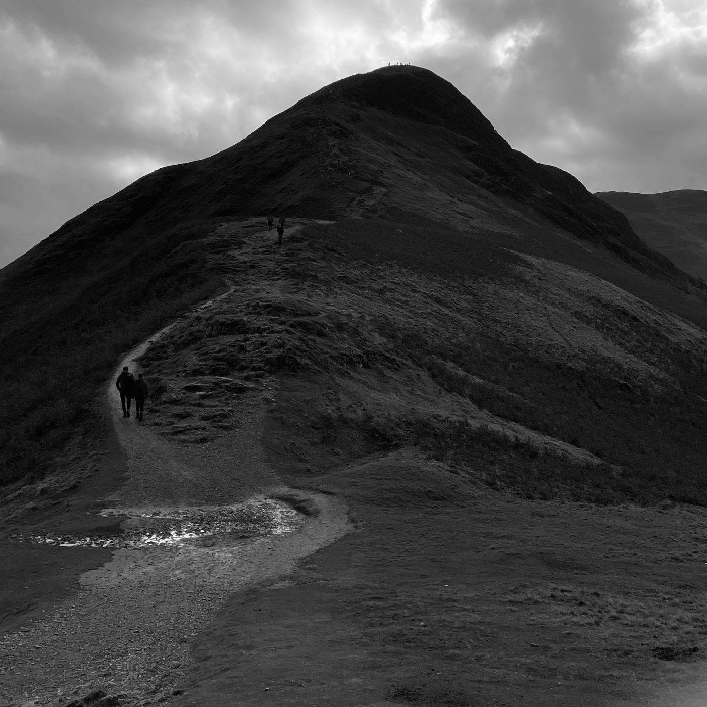
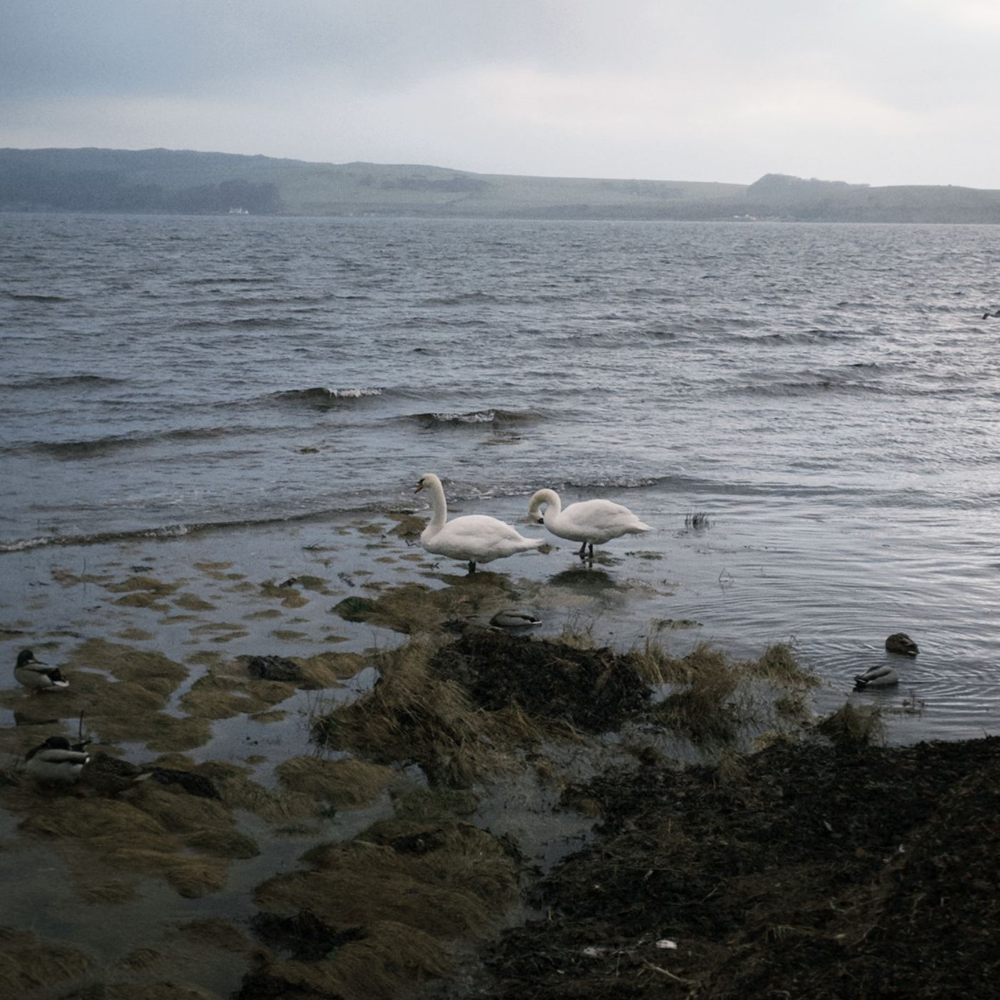

About Me
I was born in Jining, a small city in eastern China's Shandong Province, known as the hometown of the renowned Chinese philosopher Confucius. It is where I was raised and lived until I graduated from high school. I pursued Economics and Finance at SDNU and later at the University of Aberdeen for my undergraduate studies. During this time, I developed a strong passion for Behavioural Economics, ultimately leading me to continue my research journey at the University of Glasgow.

I deeply value understanding human feelings and aspire to influence others with an optimistic attitude, contributing my small part toward building a better world. I enjoy applied work, specifically behavioural and experimental economics, as it allows me to focus on connections between people, and individual experiences. In many ways, my personality has profoundly shaped my research interests, driving my curiosity and passion for exploring these topics.
I enjoy sharing my knowledge and experiences with others, hoping to inspire them in various aspects of their lives. This passion for connecting with and motivating people is one of the reasons I believe academia is such a perfect fit for me. It provides a platform to exchange ideas, foster learning, and contribute to the growth of others while continuously growing myself.
In my free time, I enjoy playing football (midfielder), badminton, hiking, and thinking :)



“The most incomprehensible thing about the world is that it is comprehensible.”
—Albert Einstein